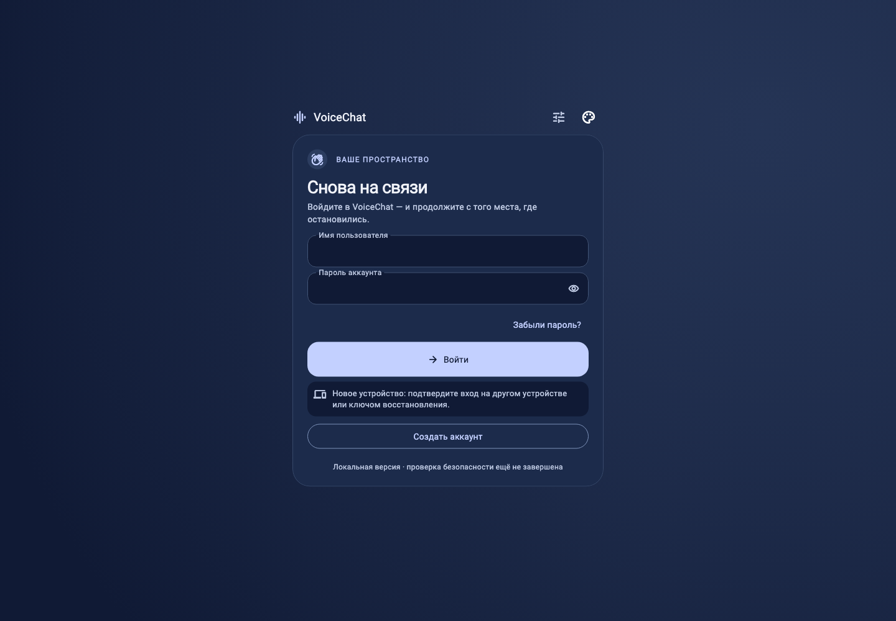
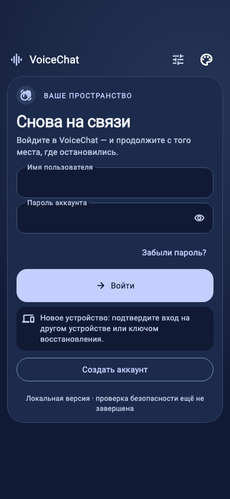
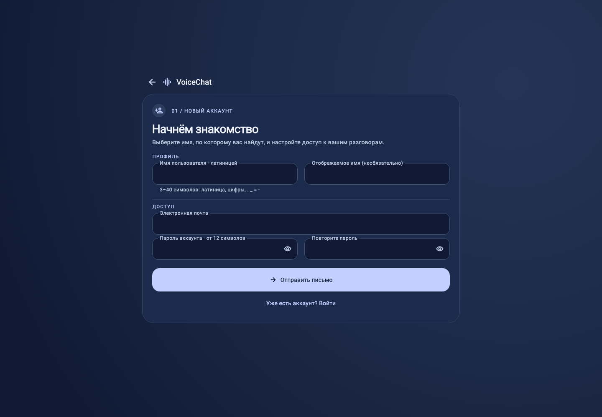
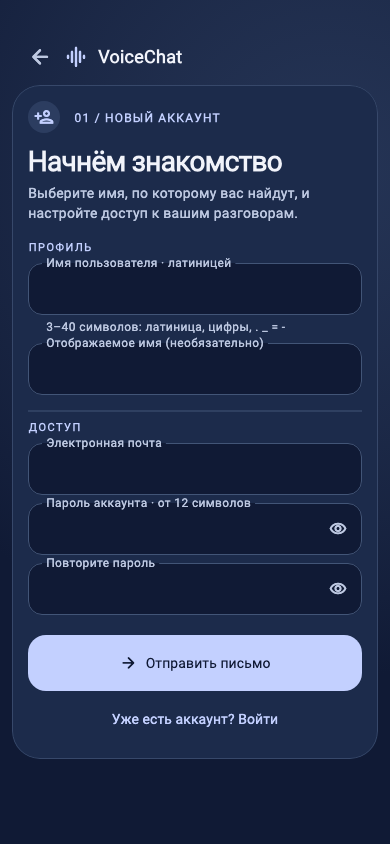
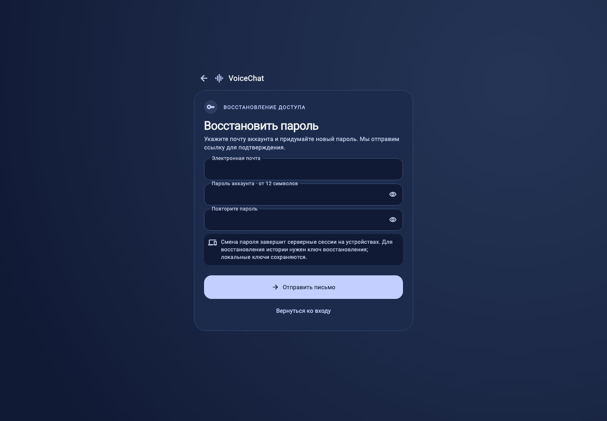
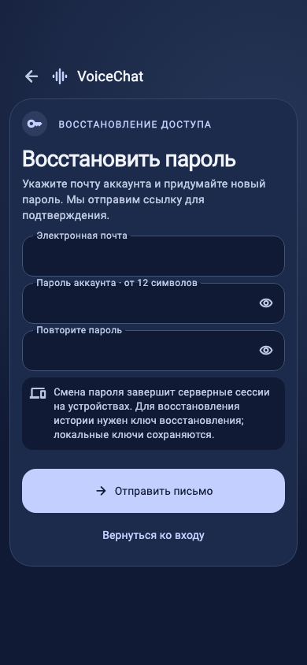
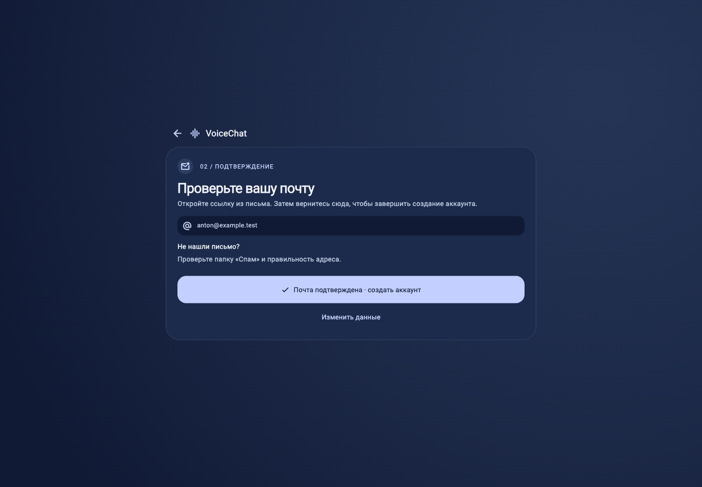
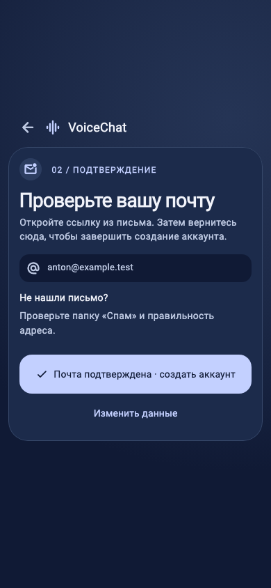

Три заново собранных экрана в общем дизайн-коде приложения: мягкие тёмно-синие поверхности, светлые акценты, ясная иерархия действий. Общие Flutter-компоненты для веба и Android.
Ниже — снимки рабочих компонентов на тестовых данных. Это не снимки физического Android-устройства. Начальные формы помещаются без прокрутки; при клавиатуре и увеличенном тексте прокрутка остаётся доступной.
Компактная карточка, заметная кнопка входа и отдельный переход к созданию аккаунта.


Профиль и доступ сгруппированы. На широком экране парные поля стоят рядом; на телефоне — в колонку.


Один понятный путь: почта, новый пароль и подтверждение. Последствия смены пароля видны до отправки.


Отдельный шаг с адресом получателя и возвратом к данным без потери введённого.

